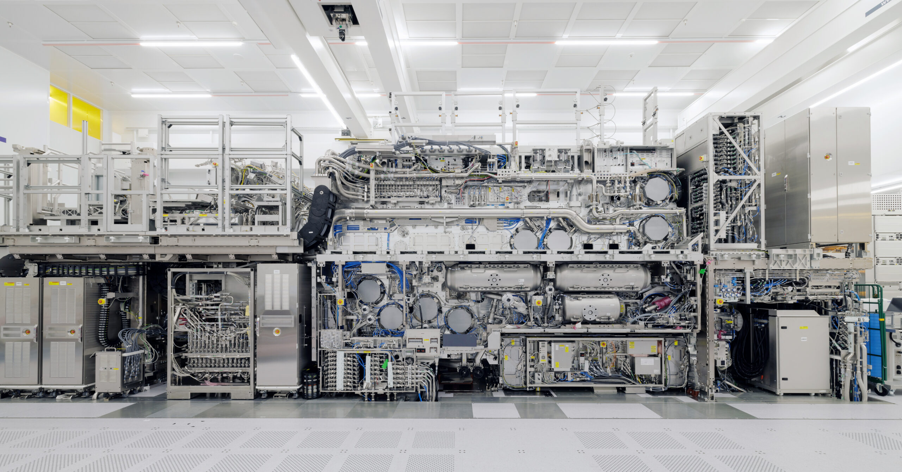

芯片不断变小，制造它的系统却越来越复杂。Works in Progress 的这篇长文回顾了 ASML 的发展：从一项尚未成熟的技术，到共同承担研发风险的供应商与客户。
它也留下一个值得继续追问的问题：当进步由许多人共同完成，我们应该如何理解其中的贡献与价值？

The world’s most complex machine
一台光刻机的背后，是光学、材料、精密制造与漫长协作的共同结果。
编者导读 · 中文摘要
芯片不断变小，制造它的系统却越来越复杂。Works in Progress 的这篇长文回顾了 ASML 的发展：从一项尚未成熟的技术，到共同承担研发风险的供应商与客户。
它也留下一个值得继续追问的问题：当进步由许多人共同完成，我们应该如何理解其中的贡献与价值？
From AI-Assisted EDA to AI-Mediated Engineering
Why Are Museum Wall Texts So Bad?
IEA 在 2025 年的基准情景中预测，到 2030 年，全球数据中心用电量将超过 2024 年的两倍。
数据：IEA《Energy and AI》(2025) ↗
包括全部数据中心，并非仅指 AI。未来值为预测。
文章探讨了在芯片进步过程中，华为、Fabless、EDA及晶圆制造各自的贡献，以及各方在技术与市场上的价值分配。从华为与晶圆厂的协作方式到Fabless在市场需求与制造能力之间的桥梁作用，分析了半导体领域的分层共创与整体进步。
余近日懒惰，日程颇少记载，然常居家中，以剪辑为乐。剪辑乃吾所爱之创作，故勤试各种效用，或视听，或蒙太奇，未尝倦焉。亦因是，每不欲外出，专心于此，不涉他事。